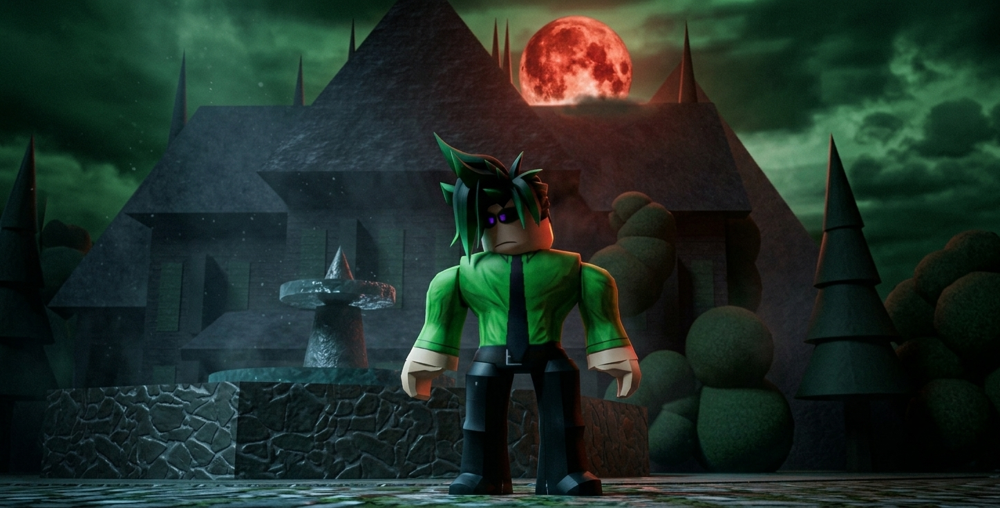

The Blood Moon Memorial

The Blood Moon Memorial is a three‑chapter story exploring Andrew OverDark’s memories of his wife, Lydia Lasil, and the grief that shaped his life after the Angelic Purges. Set between the Blood Moon Party and the Blood Moon’s Light, this story reveals the moment Seron contacts Andrew with devastating news — Varkuun is under attack, and the legendary Crimson Fear Swords have been stolen.
Chapter 1 — Lydia’s Light
Andrew OverDark returns to the memorial site he built on OverDarkis — a quiet plateau beneath the crimson sky where Lydia Lasil was laid to rest. The Blood Moon reflects across the stone markers, illuminating the carvings Andrew made by hand.
He kneels before her memorial, tracing the engraving of her name. Memories flood back: Lydia’s laughter, her warmth, the way she held his hand during the darkest nights of the Purges. Andrew whispers to her, speaking as if she were still beside him.
“I’m still trying, Lydia… I’m still fighting.”
Chapter 2 — The Weight of Silence
Andrew sits alone beneath the Blood Moon, remembering the day Lydia died — the day the Angels tore apart their home. He recalls her final words, her final smile, and the promise he made to protect the galaxy she loved.
The silence around him feels heavier than ever. Andrew closes his eyes, letting the memories wash over him. He speaks softly, telling Lydia about the Guardians, about Seron, about the fragile peace they’ve built.
“I wish you could see it… the world we’re trying to make.”
Chapter 3 — The Call
A ripple of dark energy forms beside Andrew — Seron Darkness contacting him through a long‑range Aether link. Andrew stands, wiping the dust from his hands.
Seron: “Andrew… Varkuun is under attack.”
Andrew’s expression shifts. Varkuun — the world of astral forges, the birthplace of the Crimson Fear arsenal.
Seron: “A cache of Crimson Fear Swords has been stolen. We don’t know who took them.”
Andrew looks back at Lydia’s memorial, the Blood Moon reflecting in his eyes. The grief hardens into resolve.
Andrew: “Send me the coordinates. I’m on my way.”
He touches Lydia’s memorial one last time before stepping into the rift — leaving the Blood Moon behind as he prepares for the battle ahead.